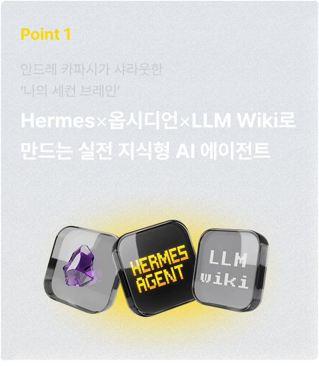
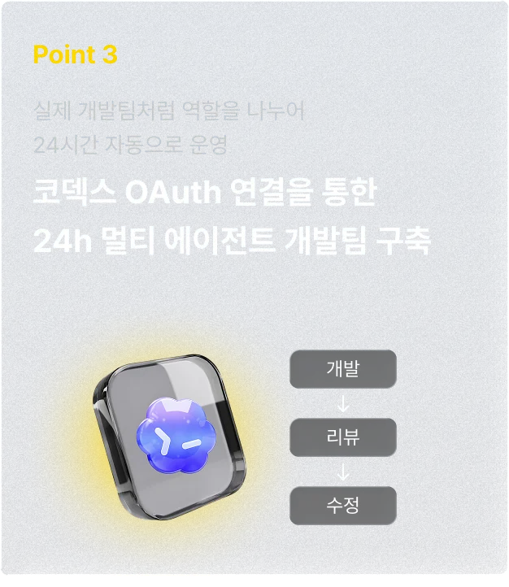

01 Hermes가 내 컴퓨터에서 열린다
설치만 하고 끝내지 않습니다. 닫았다가 다시 켜서 응답을 한 번 더 확인합니다.

AI 빌더스 랩 · 3시간 실습
패스트캠퍼스 강의가 개발 에이전트 팀을 만든다면, 이 수업은 일반인이 3시간 안에 Hermes와 LLM Wiki를 자기 컴퓨터에 설치하고 혼자 다시 실행하는 상태까지 갑니다.
이 수업이 다른 점
개발자 강의: 설치 후 개발팀 아키텍처, 역할 분리, 자동화 파이프라인
이 수업: 설치 → 첫 대화 → 내 폴더에 기록 → 혼자 다시 켜보기


오늘 결과물
설치만 하고 끝내지 않습니다. 닫았다가 다시 켜서 응답을 한 번 더 확인합니다.
웹 폼에 적지 않습니다. Obsidian Vault의 my goals.md에 직접 적습니다.
나중에 AI가 읽고 이어서 쓰게 할 지식 폴더를 오늘 경로까지 잡아 둡니다.
다음에 막혀도 영상을 되감는 대신, 내가 한 순서를 다시 따라 갑니다.
3 STEP · 180분
왜 챗봇과 다른지 짧게 본 뒤, 공식 설치로 Desktop을 엽니다. 모델 연결까지 마치고 Hermes에게 내 목표를 한 번 물어봅니다.

내 문서 폴더에 Vault를 만들고, 1차~4차 폴더와 my goals.md를 둡니다. AI가 나중에 찾아 읽게 할 지식 위치를 오늘 확정합니다.

확인 노트 하나만 만든 뒤, Obsidian에서 한 문장을 직접 수정합니다. AI 초안을 내 기록으로 바꾸는 연습을 합니다.

원본 강의가 보여주는 결과



전자책 자동화나 자비스 구축이 목표가 아닙니다. 저 화면들이 가능하게 되는 출발점, 설치와 기록 위치를 오늘 끝냅니다.
시간표
| 00:00 | 오늘 끝나는 기준과 비밀정보 금지 |
|---|---|
| 00:15 | 말로만 목표 공유. 적는 작업은 Vault에서 |
| 00:25 | Hermes 공식 설치와 첫 화면 확인 |
| 00:50 | Obsidian Vault, 1~4차 폴더, my goals.md |
| 01:20 | Hermes 모델 연결 후 응답 1회 |
| 01:40 | LLM Wiki가 들어갈 위치 확인 |
| 02:10 | 연결이 살아 있는지 한 번 더 확인 |
| 02:25 | 확인 노트 1개 만들고 사람이 검수 |
| 02:50 | 혼자 다시 켜는 순서와 다음 과제 |
이런 분께
채팅창에서 끝나지 않고, 내 폴더에 남는 방식으로 바꿉니다.
에이전트 팀 구축이 아니라 설치와 첫 실행만 오늘 끝냅니다.
LLM Wiki는 인터넷 백과가 아니라, 내 컴퓨터 안의 지식 작업대입니다.
막히는 지점만 옆에 두고 한 도구씩 확인합니다.